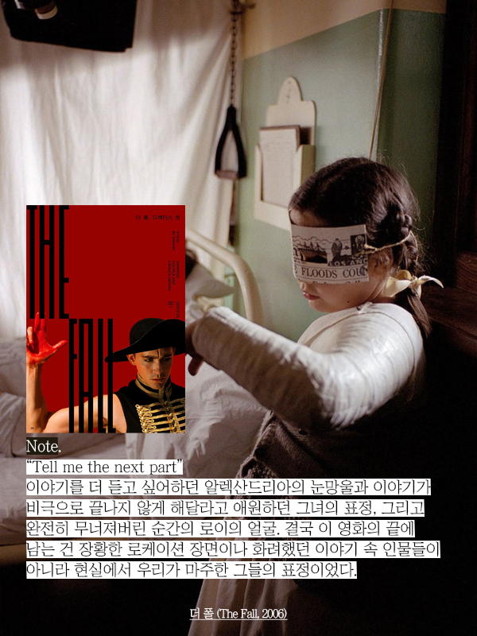
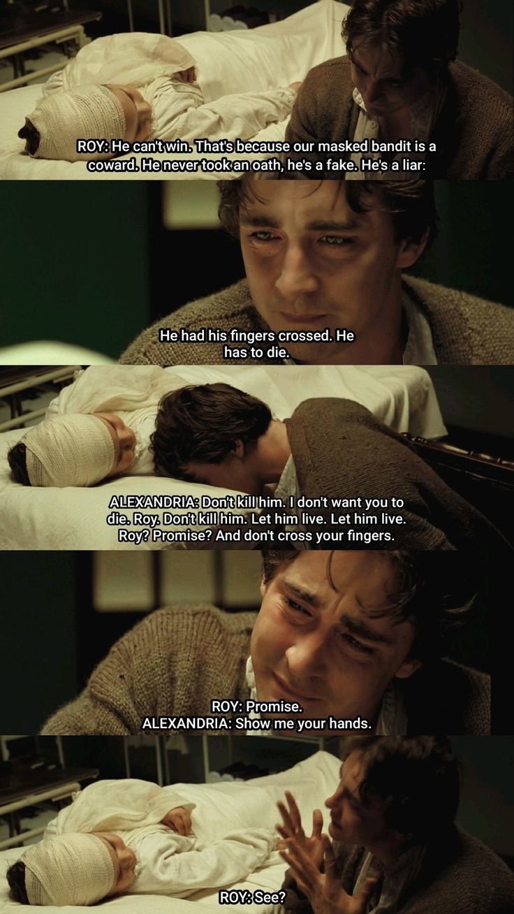

더 폴, The Fall
2006 | 드라마 | 감독 타셈 싱 | 출연 리 페이스, 카틴카 언타루
★★★★

NOTE
“당신에게는 연민의 감정이 있습니까”
글을 알지 못하는 어린 아이에게 그림책을 읽어줄 때, 어른은 글을 보고 읽지만 아이는 그림을 보면서 듣는다고 한다. 그래서 둘의 감상이 아주 다를 거라고. 꼭 이 영화가 그랬다. 로이가 들려주는 이야기가 알렉산드리아의 무궁무진한 상상력을 만나 광활하고 풍성함을 넘어 경이롭기에 이르는 화면으로 만들어진 것 같았다. 헤엄치는 코끼리들, 산호초로 변하는 이국적인 나비, 파란 집들이 있는 도시, 붉은 공작처럼 깃털 코트를 입은 다윈, 흐르는 듯한 생생한 초록색 옷과 보석으로 치장한 과묵한 인디언, 태양처럼 노란 코트와 빨간 모자를 쓴 루이지 등… 따라서 4년에 걸쳐서 24개국을 돌며 컴퓨터 그래픽 없이 직접 촬영한 환상적인 장면들은 이 영화를 완성하는 데 있어서 반드시 필요했던 선택이었을지도 모른다는 생각이 들었다.
“Tell me the next part”
이야기를 더 듣고 싶어하던 알렉산드리아의 눈망울과 이야기가 비극으로 끝나지 않게 해달라고 애원하던 그녀의 표정, 그리고 완전히 무너져버린 순간의 로이의 얼굴. 결국 이 영화의 끝에 남는 건 장황한 로케이션 장면이나 화려했던 이야기 속 인물들이 아니라 현실에서 우리가 마주한 그들의 표정이었다.
이야기를 만드는 로이와 그 이야기 안에 살아 있는 알렉산드리아의 시선이 겹치는 순간이 있는데, 그 장면이 가장 기억에 남는다.
Quote
로이 : 그는 이길 수 없어. 우리 가면 쓴 도적은 겁쟁이거든. 맹세도 안 했고, 가짜야. 거짓말쟁이라고. 손가락을 교차하고 있었어. 그러면 죽어야 해.
알렉산드리아 : 죽이지 마. 난 네가 죽는 것도 싫어, 로이. 죽이지 마. 살려줘. 살려줘. 로이? 약속해? 손가락 교차하지 말고.
로이 : 약속해.
알렉산드리아 : 손 보여줘.
로이 : 봤지?

Synopsis
무성 영화 시대의 할리우드에서 스턴트맨으로 활동하던 로이(리 페이스)는 촬영 중 사고로 병원에 입원하게 된다. 그곳에서 병원 안을 몰래 돌아다니던 호기심 많은 소녀 알렉산드리아(카틴카 언타루)와 만나게 된다. 로이는 알렉산드리아에게 다섯 명의 영웅이 등장하는 이야기를 들려준다. 동화를 이용하여 알렉산드리아에게 모르핀을 가져와달라고 부탁하지만, 몇 번의 시도를 했음에도 불구하고 모두 실패로 끝난다. 로이가 너무 괴로워하는 걸 본 알렉산드리아는 모르핀을 가져가면 로이가 제대로 잠들 수 있을 거라 생각해서 몰래 약을 훔치려고 하는데, 그만 의자에서 떨어져 머리와 다리도 다치게 된다. 로이는 알렉산드리아의 면회를 가게 되고, 그녀에게 진실을 털어놓으며 자기는 해피엔딩을 만들 수 없다고 말한다. 그러면서 이어지는 동화의 내용은 비극적이고 자조적이며 절망스러운 엔딩으로 나아가는데, 이에 알렉산드리아는 ‘이건 내 이야기니까" 내 마음대로 하겠다는 로이에게 **“내 이야기이기도 해요”**라고 외친다. 끝내 동화는 해피엔딩으로 끝을 맺게 된다.